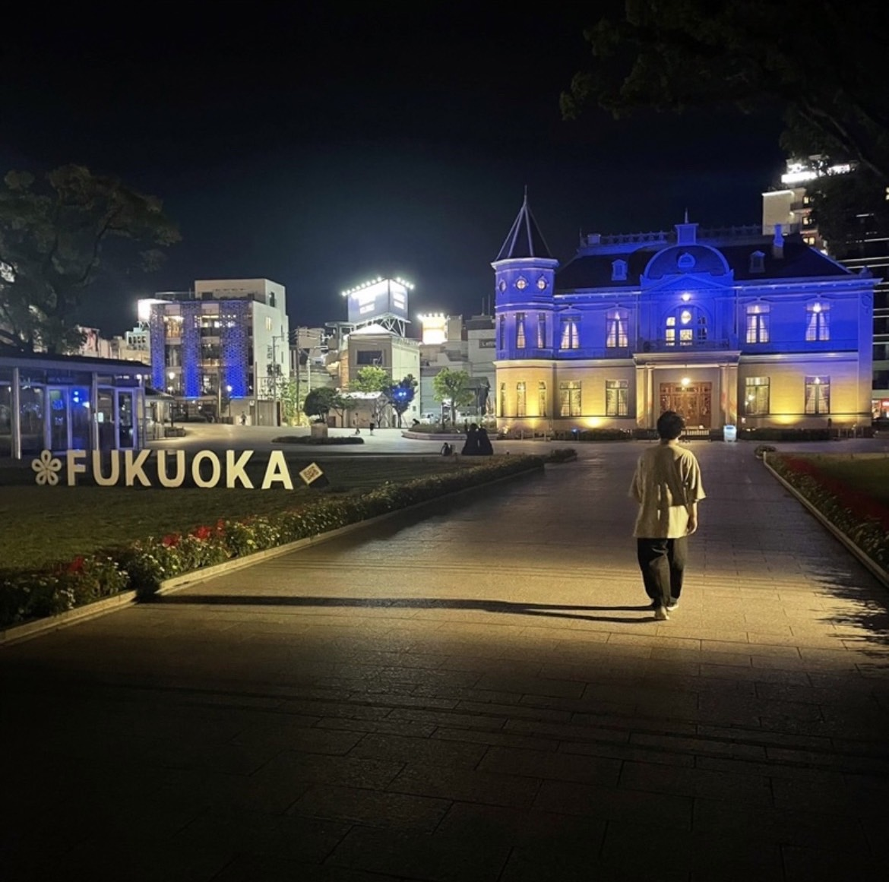

About
福岡にてフリーランスのWeb制作をしております。 2022年よりフリーランスへ転向。
福岡出身の21歳。大学に通いながら長期インターンでto Cのフルコミット営業を行っておりました。
現在はLP・Web制作中心に行い、クライアントワークを通して日々成長しています。
ベンチャー企業で培った経験を活かし、持ち前の好奇心と行動力で常に挑戦し続けます。

福岡にてフリーランスのWeb制作をしております。 2022年よりフリーランスへ転向。
福岡出身の21歳。大学に通いながら長期インターンでto Cのフルコミット営業を行っておりました。
現在はLP・Web制作中心に行い、クライアントワークを通して日々成長しています。
ベンチャー企業で培った経験を活かし、持ち前の好奇心と行動力で常に挑戦し続けます。